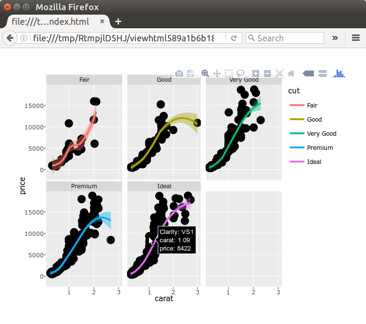

A new version of the future package has been released and is available on CRAN. With futures, it is easy to write R code once, which later the user can choose to parallelize using whatever resources s/he has available, e.g. a local machine, a set of local notebooks, a set of remote machines, or a high-end compute cluster.

The future provides comfortable and friendly long-distance interactions.
The new version, future 1.1.1, provides:
- Much easier usage of remote computers / clusters
- If you can SSH to the machine, then you can also use it to resolve R expressions remotely.
- Firewall configuration and port forwarding are no longer needed.
- Improved identification of global variables
- Corner cases where the package previously failed to identify and export global variables are now also handled. For instance, variable
xis now properly identified as a global variable in expressions such asx$a <- 3andx[1, 2, 4] <- 3as well as in formulas such asy ~ x | z. - Global variables are by default identified automatically, but can now also be specified manually, either by their names (as a character vector) or by their names and values (as a named list).
- Corner cases where the package previously failed to identify and export global variables are now also handled. For instance, variable
For full details on updates, please see the NEWS file. The future package installs out-of-the-box on all operating systems.
Example: Remote graphics rendered locally
To illustrate how simple and powerful remote futures can be, I will show how to (i) set up locally stored data, (ii) generate plotly-enhanced ggplot2 graphics based on these data using a remote machine, and then (iii) render these plotly graphics in the local web browser for interactive exploration of data.
Before starting, all we need to do is to verify that we have SSH access to the remote machine, let’s call it remote.server.org, and that it has R installed:
{local}: ssh remote.server.org
{remote}: Rscript --version
R scripting front-end version 3.3.1 (2016-06-21)
{remote}: exit
{local}: exitNote, it is highly recommended to use SSH-key pair authentication so that login credentials do not have to be entered manually.
After having made sure that the above works, we are ready for our remote future demo. The following code is based on an online plotly example where only a few minor modifications have been done:
library("plotly")
library("future")
## %<-% assignments will be resolved remotely
plan(remote, workers = "remote.server.org")
## Set up data (locally)
set.seed(100)
d <- diamonds[sample(nrow(diamonds), 1000), ]
## Generate ggplot2 graphics and plotly-fy (remotely)
gg %<-% {
p <- ggplot(data = d, aes(x = carat, y = price)) +
geom_point(aes(text = paste("Clarity:", clarity)), size = 4) +
geom_smooth(aes(colour = cut, fill = cut)) + facet_wrap(~ cut)
ggplotly(p)
}
## Display graphics in browser (locally)
ggThe above renders the plotly-compiled ggplot2 graphics in our local browser. See below screenshot for an example.
This might sound like magic, but all that is going behind the scenes is a carefully engineered utilization of the globals and the parallel packages, which is then encapsulated in the unified API provided by the future package. First, a future assignment (%<-%) is used for gg, instead of a regular assignment (<-). That tells R to use a future to evaluate the expression on the right-hand side (everything within { ... }). Second, since we specified that we want to use the remote machine remote.server.org to resolve our futures, that is where the future expression is evaluated. Third, necessary data is automatically communicated between our local and remote machines. That is, any global variables (d) and functions are automatically identified and exported to the remote machine and required packages (ggplot2 and plotly) are loaded remotely. When resolved, the value of the expression is automatically transferred back to our local machine afterward and is available as the value of future variable gg, which was formally set up as a promise.

An example of remote futures: This ggplot2 + plotly figure was generated on a remote machine and then rendered in the local web browser where it is can be interacted with dynamically.What’s next? Over the summer, I have received tremendous feedback from several people, such as (in no particular order) Kirill Müller, Guillaume Devailly, Clark Fitzgerald, Michael Bradley, Thomas Lin Pedersen, Alex Vorobiev, Bob Rudis, RebelionTheGrey, Drew Schmidt and Gábor Csárdi (sorry if I missed anyone, please let me know). This feedback contributed to some of the new features found in future 1.1.1. However, there’re many great suggestions and wishes that didn’t make it in for this release - I hope to be able to work on those next. Thank you all.
Happy futuring!
Links
- future package:
- CRAN page: https://cran.r-project.org/package=future
- GitHub page: https://github.com/HenrikBengtsson/future
- future.BatchJobs package:
- CRAN page: https://cran.r-project.org/package=future.BatchJobs
- GitHub page: https://github.com/HenrikBengtsson/future.BatchJobs
- doFuture package:
- CRAN page: https://cran.r-project.org/package=doFuture
- GitHub page: https://github.com/HenrikBengtsson/doFuture
See also
- A Future for R: Slides from useR 2016, 2016-07-02